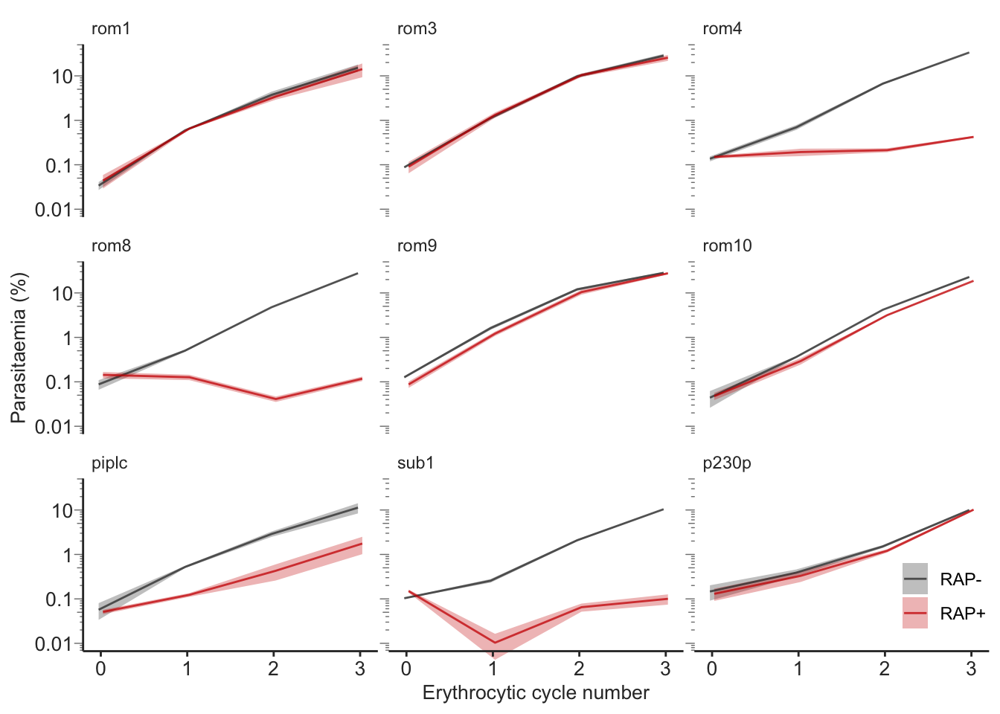
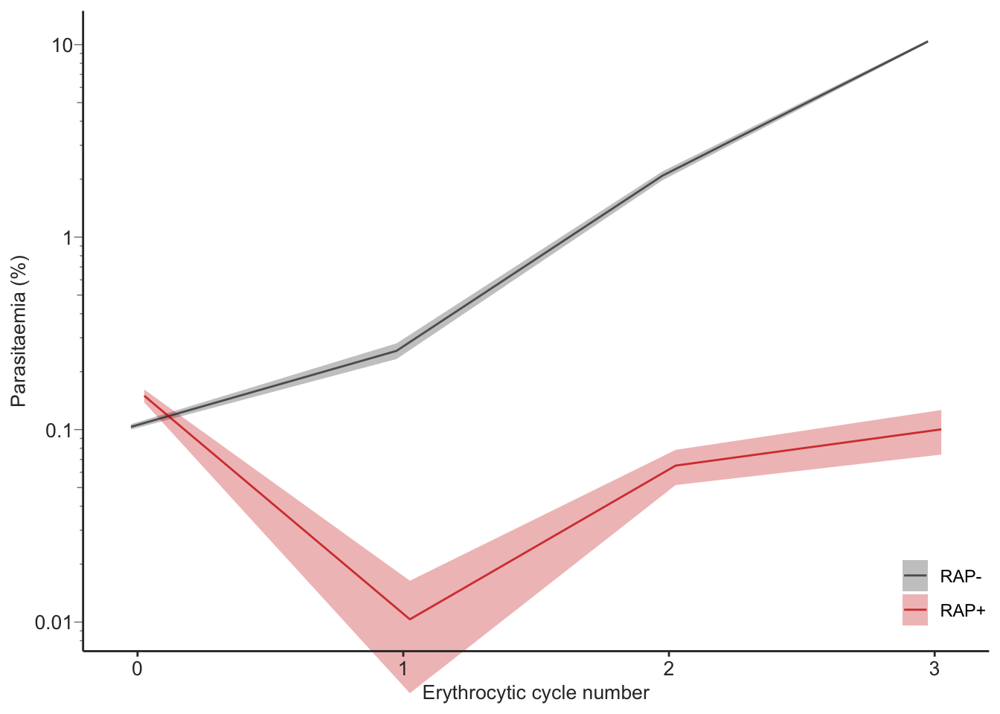
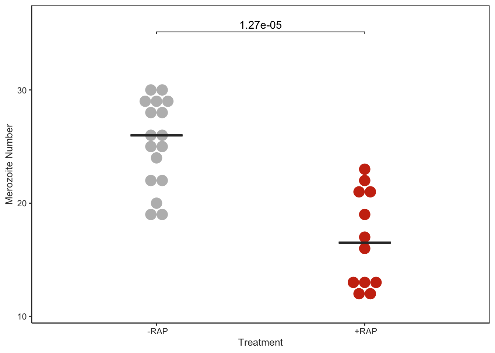
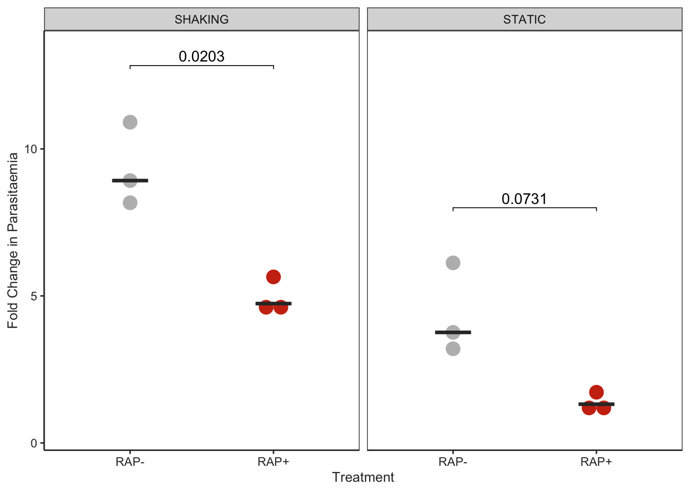

knitr::opts_chunk$set(echo =TRUE)# Load necessary libraries for plotting and data manipulationlibrary("ggplot2")library("Rmisc")
Loading required package: lattice
Loading required package: plyr
library("rstatix")
Attaching package: 'rstatix'
The following objects are masked from 'package:plyr':
desc, mutate
The following object is masked from 'package:stats':
filter
library("ggpubr")
Attaching package: 'ggpubr'
The following object is masked from 'package:plyr':
mutate
library("dplyr")
Attaching package: 'dplyr'
The following objects are masked from 'package:plyr':
arrange, count, desc, failwith, id, mutate, rename, summarise,
summarize
The following objects are masked from 'package:stats':
filter, lag
The following objects are masked from 'package:base':
intersect, setdiff, setequal, union
library("grateful")
Growth assays
Faceted growth profiles of several genes
Supplementary Figure S5
# Read CSV file into a dataframe for parasitaemia growth assay datagrowthassay <-read.csv(file="./rawdata/growthassays_v200124.csv", header = T)# Calculate summary statistics (mean, standard error) grouped by line, treatment, and cycle numbersumm.growthassay <-summarySE(growthassay, measurevar="Parasitaemia", groupvars=c("Line","Treatment","Erythrocytic.cycle.number"), na.rm=TRUE)# Define dodge position for avoiding overlap in plottingpd <-position_dodge(0.1)# Define color palette for the plotcolorPalette <-c("gray20", "red3")# Create a ggplot object with specified aestheticspgrowth <-ggplot(summ.growthassay, aes(x=Erythrocytic.cycle.number, y=Parasitaemia, group=interaction(Line, Treatment))) +# Add a ribbon to visualize standard error around the mean parasitaemiageom_ribbon(aes(ymin=Parasitaemia-se, ymax=Parasitaemia+se, fill=Treatment), alpha=0.3, position=pd) +# Add lines to plot mean parasitaemia for each groupgeom_line(position=pd, alpha=0.75, aes(color=Treatment)) +# Set manual color fill for treatmentsscale_fill_manual(values=colorPalette) +# Set manual color for lines based on treatmentscale_color_manual(values=colorPalette) +# Customize plot themetheme(# Customize the appearance of axis titlesaxis.title.x =element_text(size=10, color="gray20"), # X-axis title with font size 10 and gray coloraxis.title.y =element_text(size=10, color="gray20"), # Y-axis title with font size 10 and gray color# Remove title from the legendlegend.title=element_blank(), # Removes the legend title# Customize legend appearancelegend.background=element_blank(), # Removes background from legendlegend.position=c(0.95, 0.1), # Sets legend position at the bottom right (95% to the right and 10% from the bottom)legend.key =element_blank(), # Removes the background boxes in legend symbolslegend.key.width =unit(0.5, "cm"), # Sets the width of the legend keys# Customize axis text appearanceaxis.text=element_text(size=10, color="gray20"), # Sets axis text size and color# Customize the appearance of the axis linesaxis.line =element_line(colour ="gray20"), # Sets axis line color to gray# Customize the appearance of axis ticksaxis.ticks.y =element_blank(), # Removes y-axis ticksaxis.ticks.x =element_line(colour ="gray20"), # Sets x-axis ticks color to gray# Customize the appearance of the plot strips (for facets)strip.background =element_blank(), # Removes the background from facet labelsstrip.text =element_text(colour ="gray20", hjust=0), # Sets the color of facet label text and justifies them to the left# Remove grid lines from the backgroundpanel.grid=element_blank(), # Removes grid lines# Customize the panel backgroundpanel.background=element_blank() # Removes panel background to make it transparent) +# Set x and y axis labelsxlab("Erythrocytic cycle number") +ylab("Parasitaemia (%)") +# Apply logarithmic scale to y-axis with specified breaks and labelsscale_y_log10(breaks =c(0.01, 0.1, 1, 10), labels =c(0.01, 0.1, 1, 10)) +# Add log ticks to the plot for better visualization of log scaleannotation_logticks(sides ="l", color="gray50", outside=T, size=0.25, long =unit(0.15, "cm"), mid =unit(0.1, "cm"), short =unit(0.05, "cm")) +# Adjust y-axis limits and clip behaviorcoord_cartesian(ylim=c(1e-2, NA), clip ="off") +# Facet plot by gene, arranging into 4 rowsfacet_wrap(~factor(Line, c("rom1","rom3","rom4","rom8","rom9","rom10","piplc","sub1","p230p")), nrow=4)# Display the plotpgrowth

# Save the plot as a PDF fileggsave("./outplots/pgrowth.pdf", width =5, height =5)# Write the summary data to a CSV filewrite.csv(summ.growthassay, file="./outdata/summ.growthassay.csv")
Growth profile for sub1
Figure 2B
# Set position dodge for avoiding overlap in bar or dot plotspd <-position_dodge(0.1)# Define color palette for plotscolorPalette <-c("gray20", "red3")# Create a ggplot object for the 'sub1' line, showing parasitaemia across erythrocytic cycle numberspgrowth_sub1 <-ggplot(summ.growthassay %>%filter(Line =="sub1"), aes(x = Erythrocytic.cycle.number, y = Parasitaemia, group =interaction(Line, Treatment))) +# Add a ribbon to represent the standard error around the mean parasitaemiageom_ribbon(aes(ymin = Parasitaemia - se, ymax = Parasitaemia + se, fill = Treatment), alpha =0.3, position = pd) +# Add a line to plot the mean parasitaemia for each treatmentgeom_line(position = pd, alpha =0.75, aes(color = Treatment)) +# Manually set fill colors for treatments using the predefined color palettescale_fill_manual(values = colorPalette) +# Manually set line colors for treatments using the predefined color palettescale_color_manual(values = colorPalette) +# Customize various theme elements for the plottheme(axis.title.x =element_text(size =10, color ="gray20"), # X-axis title customizationaxis.title.y =element_text(size =10, color ="gray20"), # Y-axis title customizationlegend.title =element_blank(), # Remove legend titlelegend.background =element_blank(), # Transparent legend backgroundlegend.position =c(0.95, 0.1), # Position the legend in the bottom right cornerlegend.key =element_blank(), # Remove background for legend keyslegend.key.width =unit(0.5, "cm"), # Set width of legend keysaxis.text =element_text(size =10, color ="gray20"), # Customize axis text appearanceaxis.line =element_line(colour ="gray20"), # Customize axis line coloraxis.ticks.y =element_blank(), # Remove y-axis ticksaxis.ticks.x =element_line(colour ="gray20"), # Customize x-axis ticksstrip.background =element_blank(), # Transparent strip backgroundstrip.text =element_text(colour ="gray20", hjust =0), # Customize facet strip textpanel.grid =element_blank(), # Remove panel gridpanel.background =element_blank() # Transparent panel background ) +# Label the x and y axesxlab("Erythrocytic cycle number") +ylab("Parasitaemia (%)") +# Apply a logarithmic scale to the y-axis and customize tick marks and labelsscale_y_log10(breaks =c(0.01, 0.1, 1, 10), labels =c(0.01, 0.1, 1, 10)) +# Add logarithmic tick marks on the y-axis for better visualization of log scale dataannotation_logticks(sides ="l", color ="gray50", outside = T, size =0.25,long =unit(0.15, "cm"), mid =unit(0.1, "cm"), short =unit(0.05, "cm")) +# Adjust y-axis limits and disable clipping to allow for elements to draw outside plot areacoord_cartesian(ylim =c(1e-2, NA), clip ="off")# Display the plotpgrowth_sub1

# Save the plot to a PDF file with specified dimensionsggsave("./outplots/pgrowth_sub1.pdf", width =5, height =5)
Number of merozoites in schizonts
Figure 3H
Counted from IFA images of RAP and mock treated rom8-shiftiko line
# Load rom8 merozoites data from a CSV filerom8.merozoites <-read.csv("./rawdata/rom8_merozoites_v200124.csv")# Create a dot plot for merozoite number by treatmentpmerozoites_rom8 <-ggplot(rom8.merozoites,aes(x =factor(Treatment), y = MerozoiteNo)) +geom_dotplot(aes(fill = Treatment), # Fill dots by Treatmentbinaxis ="y", # Bin dots along the y-axisbinwidth =0.5, # Set width between bins to 0.5stackdir ="center", # Center the stacking of dotsdotsize =2, # Set dot size to 2color =NA# No border color for dots ) +stat_summary(fun = median, # Add a median crossbarfun.min = median, # Set minimum for the crossbar to medianfun.max = median, # Set maximum for the crossbar to mediangeom ="crossbar", # Use crossbar geom for medianwidth =0.25, # Set width of the crossbarcolour ="gray20") +# Set color of the crossbartheme_bw() +# Use built-in bw theme for plot backgroundscale_fill_manual(values =c("#BBBBBB", "#CC3311")) +# Manual colors for fill based on Treatmenttheme(axis.title =element_text(size =10, color ="gray20"), # Customize axis titlesaxis.text =element_text(color ="gray20"), # Customize axis text coloraxis.line =element_line(colour ="gray20"), # Customize axis line colorpanel.grid =element_blank(), # Remove panel gridpanel.background =element_blank(), # Transparent panel backgroundlegend.position ="none") +# Remove legendxlab("Treatment") +# Label for x-axisylab("Merozoite Number") # Label for y-axis# Perform pairwise t-tests between treatments for merozoite number with Bonferroni adjustmentpwc <- rom8.merozoites %>%t_test(MerozoiteNo ~ Treatment, p.adjust.method ="bonferroni") %>%add_xy_position(x ="Treatment", fun ="mean_sd", dodge =0.8) # Calculate positions for p-value labels# Add p-value annotations to the plotpmerozoites_rom8 <- pmerozoites_rom8 +stat_pvalue_manual( pwc, label ="p", tip.length =0.01, # Specify p-value label and tip lengthbracket.nudge.y =5# Nudge for brackets vertically ) +scale_y_continuous(expand =expansion(mult =c(0.1, 0.1))) # Slightly expand y-axis limits# Display the plotpmerozoites_rom8

# Save the plot to a PDF file with specified dimensionsggsave("./outplots/pmerozoites_rom8.pdf", width =4, height =4)
Invasion assay
Figure 3J
4 hour invasion assays of RAP and mock treated rom4-shiftiko line under static and shaking conditions
# Load rom4 invasion assay data from a CSV filerom4.invasion <-read.csv("./rawdata/rom4_invasionassay_v200124.csv")# Spread data for AFTER and BEFORE Timepoint, calculate Fold Changerom4.invasion.FC <-spread(rom4.invasion, Timepoint, Parasitaemia, fill=0) %>%transmute(Line, Treatment, Condition, Replicate, FoldChange = AFTER / BEFORE)# Create dotplot for rom4 invasion fold changepinvasion_rom4 <-ggplot(rom4.invasion.FC, aes(x =factor(Treatment), y = FoldChange)) +geom_dotplot(aes(fill = Treatment), # Color dots by Treatmentbinaxis ="y", # Bin along y-axisbinwidth =0.5, # Width of bins for dotplotstackdir ="center", # Stack dots centereddotsize =1, # Size of dotscolor =NA# No border color for dots ) +stat_summary(fun = median, # Add median crossbarfun.min = median, # Minimum for crossbar (median)fun.max = median, # Maximum for crossbar (median)geom ="crossbar", # Type of geom to display medianwidth =0.25, # Width of the crossbarcolour ="gray20") +# Color of the crossbarfacet_grid(. ~ Condition, labeller =labeller(Condition =c(SHAK ="SHAKING", STAT ="STATIC"))) +# Facet by Condition with labelstheme_bw() +# Use "bw" theme for plot backgroundtheme(axis.title =element_text(size =10, color ="gray20"), # Customize axis titlesaxis.text =element_text(color ="gray20"), # Customize axis textaxis.line =element_line(colour ="gray20"), # Customize axis linespanel.grid =element_blank(), # Remove grid linespanel.background =element_blank(), # Transparent backgroundlegend.position ="none") +# Remove legendscale_fill_manual(values =c("#BBBBBB", "#CC3311")) +# Manual fill colors for dotsxlab("Treatment") +# X-axis labelylab("Fold Change in Parasitaemia") # Y-axis label# Perform pairwise comparison for FoldChange by Treatment within each Conditionpwc <- rom4.invasion.FC %>%group_by(Condition) %>%t_test(FoldChange ~ Treatment, p.adjust.method ="bonferroni") %>%# t-test with Bonferroni adjustmentadd_xy_position(x ="Treatment", fun ="mean_sd", dodge =0.8) # Calculate positions for p-value labels# Add statistical significance annotations to the plotpinvasion_rom4 <- pinvasion_rom4 +stat_pvalue_manual( pwc, label ="p", tip.length =0.01, # Display p-valuesbracket.nudge.y =1# Nudge for brackets ) +scale_y_continuous(expand =expansion(mult =c(0.1, 0.1))) # Expand y-axis limits slightly# Display the plotpinvasion_rom4

# Save the plot to a PDF file with specified dimensionsggsave("./outplots/pinvasion_rom4.pdf", width =4, height =4)
Allaire, JJ, Yihui Xie, Christophe Dervieux, Jonathan McPherson, Javier Luraschi, Kevin Ushey, Aron Atkins, et al. 2023. rmarkdown: Dynamic Documents for r. https://github.com/rstudio/rmarkdown.
R Core Team. 2023. R: A Language and Environment for Statistical Computing. Vienna, Austria: R Foundation for Statistical Computing. https://www.R-project.org/.
Silge, Julia, and David Robinson. 2016. “tidytext: Text Mining and Analysis Using Tidy Data Principles in r.”JOSS 1 (3). https://doi.org/10.21105/joss.00037.
Slowikowski, Kamil. 2024. ggrepel: Automatically Position Non-Overlapping Text Labels with “ggplot2”. https://ggrepel.slowkow.com/.
Wickham, Hadley, Mara Averick, Jennifer Bryan, Winston Chang, Lucy D’Agostino McGowan, Romain François, Garrett Grolemund, et al. 2019. “Welcome to the tidyverse.”Journal of Open Source Software 4 (43): 1686. https://doi.org/10.21105/joss.01686.
Xie, Yihui. 2014. “knitr: A Comprehensive Tool for Reproducible Research in R.” In Implementing Reproducible Computational Research, edited by Victoria Stodden, Friedrich Leisch, and Roger D. Peng. Chapman; Hall/CRC.
———. 2015. Dynamic Documents with R and Knitr. 2nd ed. Boca Raton, Florida: Chapman; Hall/CRC. https://yihui.org/knitr/.
———. 2023. knitr: A General-Purpose Package for Dynamic Report Generation in r. https://yihui.org/knitr/.
Xie, Yihui, J. J. Allaire, and Garrett Grolemund. 2018. R Markdown: The Definitive Guide. Boca Raton, Florida: Chapman; Hall/CRC. https://bookdown.org/yihui/rmarkdown.